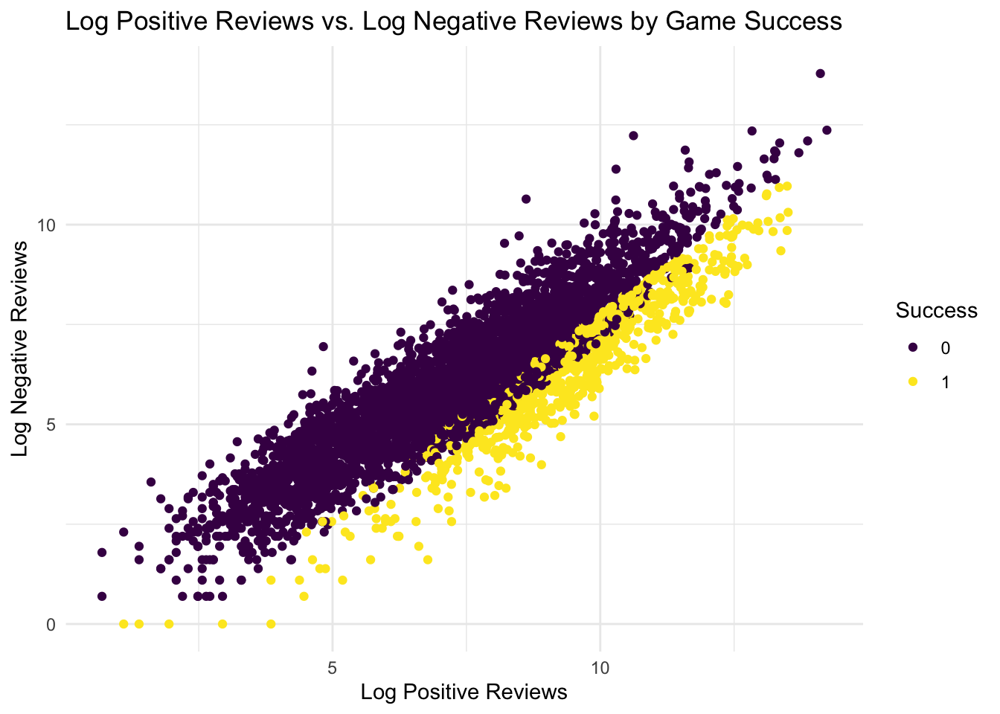
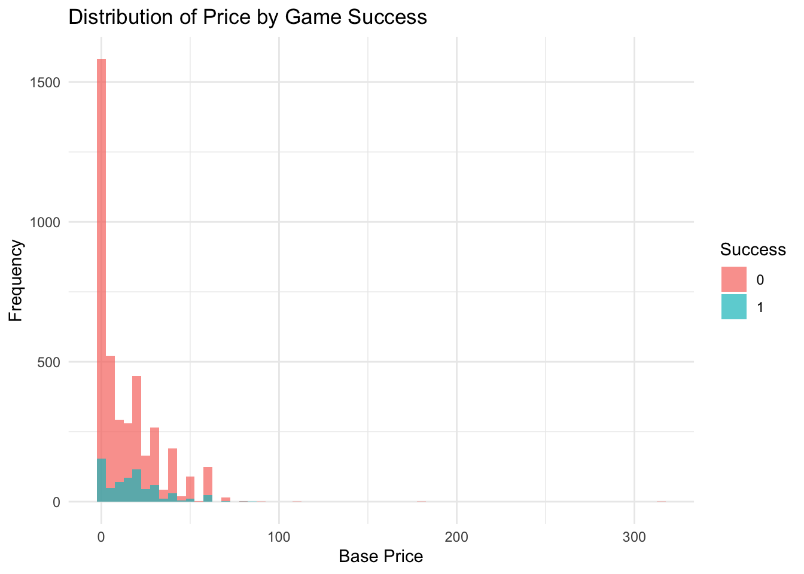
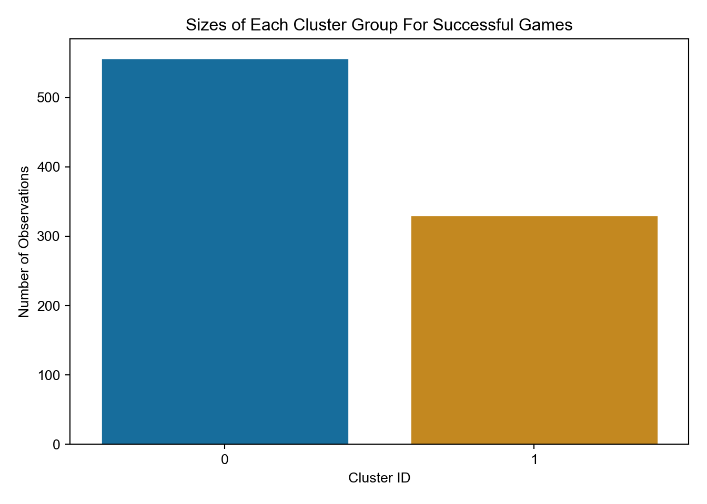
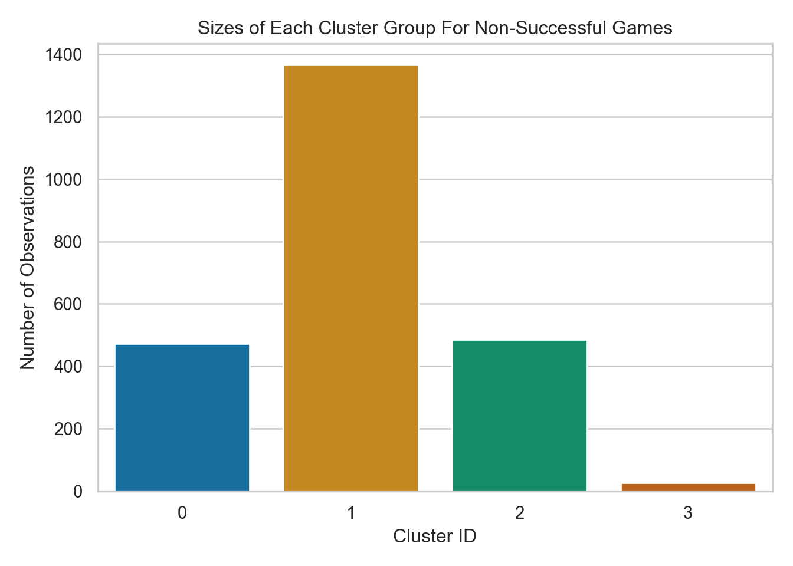

Final Report
Abstract
This project aims to analyze Steam game data to identify variables that correlate with game success. As success is a subjective term, we had to define it using variables that we scraped. We defined success as a linear expression that factors in the daily peak/all time peak ratio, months since game’s release, and the number of platforms it is on. To look at its distribution, approximately 27% of games were classified as successful.
We collected our data from various sources including the official Steam store site, SteamDB, and SteamCharts and cleaned it. Then, both supervised (logistic regression, support vector machines, random forest, and gradient boosting machines) and unsupervised (K-means clustering) machine learning techniques were employed to explore the dataset.
Classification models were evaluated based on AUC-ROC scores, with random forest performing the best and SVM performs the worst (Random forest seems to have the highest AUC score of .80). Additionally, K-means clustering revealed genre patterns among successful and unsuccessful games. We found that in both successful and non-successful games, there is a similar trend where ‘Indie’, ‘Action’, and/or ‘Adventure’ games are the highest. As a result, we learn that a game’s genres is only one piece of the full picture.
Introduction
For our project topic, we look at analyzing Steam game data to identify any variables that classify success. Steam is the largest online game storefront that acts as the middleman between game developers and consumers. There are thousands of games listed on Steam that have varying player counts and level of success. There are many games that reached the highest of highs but fallen the most or games that never really see the light of day. We define success as a linear equation that accounts for the peak ratio, how long has the game been released in months, and the number of platforms it is on. For the peak ratio, we calculate that by dividing the daily peak player count by all time player peak count. For platforms, we multiply the number of platforms by a factor of 0.01. Lastly, we multiply amount of months the game has been out by 0.001. By combining the tree variables together, we consider the game successful if it meets the threshold of 0.20. We chose this threshold to give games some flexibility and to prevent our data to be skewed to games that are currently popular. We wanted to include games that were popular in the past but still retain a sizable player base. Another reason why we chose to define success this way rather than look at market data like game sales or total revenue is because these are not public data and if any does exist, they are at best estimates.
The websites that we will be scraping our data from are the official Steam store site (https://store.steampowered.com/), a third party Steam tracker website SteamDB (https://steamdb.info/), and another third party Steam tracker website SteamCharts (https://steamcharts.com/). Since some of our variables may change depending on the day, we want to be transparent and make it known that all of our data has been scraped on February 28, 2024. In regards to what variables we used, we looked at all the main variables that a game contains.
Variables
Name: The name of the game Genres: What genre(s) the game belongs under Tags: What player-generated tag(s) the game belongs under Publisher: The publishing company Developer: The developing company Platforms: The number of platforms the game is playable on (Windows, Linux, MacOS, etc) Release Date: The date the game was released on Steam, converted to number of months it has been since release Base Price: The base price of the game Playability: Is the game made for singleplayer, cooperative, or multiplayer Negative Reviews: The total number of negative reviews Positive Reviews: The total number of positive reviews Total Reviews: The total number of reviews Daily Peak: The peak player count on 2/28/2024 All Time Peak: The peak player count recorded as of 2/28/2024
We will use both supervised and unsupervised machine learning techniques to identify factors that correlate with success. For supervised learning, we will focus on using logistic regression, support vector machines, random forest, and gradient boosting machines. We are able to extract and analyze the AUC score of these 4 models to see which does a better job at predicting success given some data. For unsupervised machine learning, we will primarily use K-Means Clustering to see any trends within the games.
Data Wrangling
After scraping our game data, there were some data cleaning and wrangling we had to do. First, for the release dates, we formatted them into YYYY-MM-DD. Then, to calculate the success equation’s month variable, we converted the release date into how many months has it been since its release. Secondly, we converted genres and playability into categorical columns and created dummy categories. Thirdly, we standardized our base price column by converting all of the free games into a base price of ‘0’ so it would be a numerical column. We originally planned on using the tags column similar to how we used the genres column but since it would add ~410 extra dummy categories, we decided to drop the tags column. For our numerical columns, we added a column containing the log values in order to work with a smaller range of numbers. Furthermore, while SteamDB and the Steam store site contains game data since the game’s release date, SteamCharts only contain information as early as mid-2012. Therefore, in order to not miscategorize older games or skew the data in any way, we dropped all games that were released pre-mid-2012. We then converted the platforms category into numerical values based on how many platforms the game has support for. Lastly, we dropped all NaNs and all non-game entries based on their genres.
Methodology
In this part, we began to do both visualizations and summary statistics to help us gain insights into the distribution of game success and the relationship between various key variables. From our analysis, we observe that approximately 27% (887) of the total games in our dataset are considered successful based on our defined criteria. The rest (2351) are considered non-successful. Next, we delve into exploring the relationship between positive reviews, negative reviews, and game success through scatter plots. By plotting the logarithm of positive reviews against the logarithm of negative reviews, colored by the “Success” variable, we aim to identify any discernible patterns or clusters.
The plot reveals that while successful games do tend to have higher positive/negative review ratios, most of the games, both successful and nonsuccessful, are clumped together. This indicates that there is not a huge distinction between successful games and nonsuccessful games positive/negative review ratios. With some research, this conclusion makes sense as some games may get review bombed (mass submission of negative reviews) due to certain circumstances, yet their player count does not get negatively affected.
Furthermore, we want to look at the price distribution of the games. As games usually fall in similar price categories, we can use a histogram to count the number of games that fall under each category.

From this graph, we see that most successful games are mostly under 20.99. However, with closer observations, we see that most games, both successful and unsuccessful, exist under 20.99. While we can say that the most successful games are cheap, we should be careful as most games are made to be free or to be sold at a relatively low price.
We then provide a summary statistics table for key numerical variables including base price, all time peak, negative and positive reviews, total reviews, and the ratio of daily/all time peak. We look at the mean, median, standard deviation, minimum, and max for all of these variables.
| Variable | Mean | Median | SD | Min | Max |
|---|---|---|---|---|---|
| ALL.TIME.PEAK | 10629.10 | 1375.00 | 72935.38 | 0 | 3236027.00 |
| BASE.PRICE | 14.12 | 7.99 | 16.98 | 0 | 314.65 |
| NEGATIVE.REVIEWS | 2631.84 | 437.00 | 17344.63 | 0 | 969052.00 |
| POSITIVE.REVIEWS | 15158.77 | 2246.00 | 60352.32 | 1 | 1518229.00 |
| TOTAL.REVIEWS | 17790.61 | 2798.00 | 72964.50 | 2 | 2312961.00 |
| peak_ratio | 0.11 | 0.04 | 0.18 | 0 | 1.00 |
To address our project’s goal of identifying variables that classify success within Steam game data, we employed a combination of supervised and unsupervised learning techniques we learned in classes, trying to leverage the strengths of each method and ensure a comprehensive analysis of the dataset.
First, various classification algorithms are employed,including Logistic Regression, Random Forest, Support Vector Machines (SVM), and Gradient Boosting Machines (GBM), and we then compared these models based on AUC-ROC scores which is powerful means of evaluating the discriminatory ability of each model across different thresholds.Our aim is to predict the success of games within the Steam platform. Each algorithm was meticulously chosen for its unique capabilities. Logistic Regression, known for its simplicity and interpretability. Meanwhile, Random Forest leveraged ensemble learning to discern complex relationships and feature interactions within the data. SVM renowned for its prowess in handling high-dimensional data and nonlinear relationships, while GBM, through iterative refinement, adeptly captured subtle patterns and predictive trends.
In addition, to better explore inherent groupings or clusters within the non-successful and successful games, we decide to employ K-means clustering. We separate our data into non-successful and successful categories. Our hope then with these separated data is to find some similarities among the genres, publisher, developer, playability, and base price columns.
Results
Classifications Models (Supervised Machine Learning Model)
The input features used for prediction include numerical features such as base price, all-time peak player count, total reviews, and negative reviews. Additionally, categorical features such as game genres (e.g., Action, Adventure, Strategy, Free to Play, Movie) were incorporated. These features were preprocessed to ensure its capability with models.
Each model was fitted using different strategies, and for Random forest, SVM, and GBM, they utilized hyperparameter tuning techniques for better performance on the test data while guarding against overfitting. Specifically, random forest and GBM models employed grid search with cross-validation (GridSearchCV) to find the optimal hyperparameters, such as the number of estimators and maximum depth. SVM model tuning involved grid search with stratified cross-validation, searching over parameters like alpha and gamma values. These techniques ensure that the models are optimized. Compared to these three models, Logistic regression was simple but Interpretable, and it was fitted directly to the training data after preprocessing the inputs.
| Model | AUC-ROC |
|---|---|
| SVM | 0.57 |
| Random Forest | 0.80 |
| Logistic Regression | 0.69 |
| Gradient Boosting | 0.67 |
Lastly, we obtained the AUC ROC scores for each model: logistic regression (0.69), random forest (0.80), SVM (0.57), and GBM (0.67). Notably, the random forest model exhibited the highest AUC ROC score (0.80), which suggests great predictive capability compared to the other models. Conversely, the SVM model got the lowest AUC ROC score (0.57), indicating relatively weaker discriminatory power.
K-Means (Unsupervised Machine Learning Model)
For our successful clusters, we used K=2 as that gave us the best results. For Cluster 0, there are about 560 games while there are about 320 for Cluster 1.

For our failure clusters, we used K=4. Cluster 1 has the largest amount of games of about 1350. Cluster 0 and 2 have similar amount of games at around 460. Cluster 3 has about barely 20 games.

We decided to an analysis on the cumulative sum of all genres present in each success cluster. These clusters contain singular genre values and doesn’t talk about how the genres are combined together (eg ‘Indie Action’), but rather just how much of each genre exist. We chose not to look at the entire genre classification for each game due to how many combinations may exist. This is also to prevent having a large and sparse data set. Another issue that we want to mention is that due to K-Means Clustering algorithm, there is a chance that our clustering may be different with each run. The successful clustering seems to be pretty precise with each run. For success clusters, while the exact numbers may be slightly different, the difference is miniscule.
In Cluster 0 of successful games, we see a large amount of games being classified as ‘Indie’ (279), ‘Simulation’ (239), and ‘Strategy’ (226) genres. In Cluster 1 of successful games, we see more games being classified as ‘Action’ (191). The next two most populous genres are ‘Indie’ (135) and ‘Simulation’ (124). Analyzing both clusters return a conclusion that most successful games fall under a few main genres which are ‘Indie’, ‘Simulation’, ‘Strategy’, and ‘Action’. This, however, does not mean that a game being these genres will automatically be successful. This just shows the distribution of genres between successful games. We need to keep in mind that some games may fall under different categories, as well.
Next, we will apply K-Means Clustering on the failure games. Similar to the success clusters, each time K-Means Clustering is applied, the ultimate results may be different. As such, the data seen here is accurate as of May 7, 2024 (03:24 PM). While the numbers and the clusters may be different, the general pattern still remains the same. The same genres (‘Action’, ‘Adventure’, ‘Indie’, ‘Simulation’, ‘RPG’) still remain near the top.
We do a similar analysis on the failure clusters. In Cluster 0, ‘Indie’ (361) has the largest following. ‘Action’ (222) and ‘Casual’ (205) are the next two closest genres. In Cluster 1, we notice that ‘Indie’ (721) still has the largest numbers, with ‘Action’ (544) following behind. However, we also noticed that ‘Adventure’ (492), ‘RPG’ (427), ‘Strategy’ (400), and ‘Simulation’ (379) are not far out. In Cluster 2, ‘Indie’ (378) has the largest following. ‘Action’ (226) and ‘Casual’ (213) are the next two closest genres. For Cluster 3 for the nonsuccessful games, we see the top three genres that the games fall under: ‘Action’ (19), ‘RPG’ (15), ‘Adventure’ (14).
Similarly to the success clusters, we must keep in mind that these numbers also include games that may fall under multiple genres. Regardless, we see that ‘Indie’ games make up the most of nonsuccessful games, followed by ‘Action’. Since both the successful and nonsuccessful clusters contain similar patterns, genres, by themselves, cannot indicate a game’s success. This shows us that there are other factors that play into how successful a game can become, like the art style or developing company. We believe a crucial part in how our results are created is the distribution of game genres. Most games that people create are ‘Indie’ games since they aren’t backed by big companies like EA or Ubisoft. As a result, ‘Indie’ games are the most common and our data reflects it. What we could do in future analysis is to normalize the numbers and then take another look at it to see if we find more patterns.
Discussion
Classification Models
After comparing these four different models, we found that Random forest model outperforms other models with highest ROC_AUC value. One reason we think is due to its ability to capture complex nonlinear relationships within the data. It aggregate the predictions of multiple decision trees, which leads to robust performance, especially when dealing with high-dimensional datasets with nonlinear relationships, such as the dataset we have for this project. On the other hand, SVM models, while powerful in capturing complex decision boundaries, in this case, is struggle with steam datasets. One possible reason we thought could be our datasets have overlapping classes that would curb the predictive ability of SVM since they rely on finding the optimal hyperplane to separate the classes.
While our focus was primarily on predictive performance, the interpretability of the models was not thoroughly addressed. Understanding the factors driving model predictions is crucial, so to increase interpretability, we might try to delve deeper into Logistic regression model and present them to readers. Also, our analysis relied on a single dataset, which have limitations in terms of sample size and data quality, and one thing we noticed is that the selection of input features in our analysis was partially based on intuition, and it largely depends on what kinds of information available to us. Thus, we admit that there may be additional features or interactions that could improve model performance. We’ve always been interested in the average time spent playing games, but that data is hard to collect and scrape.
The Definition of Success
After taking a step back and re-looked at our research question. We realized the biased nature of how we defined success (we initially even use variables that define success to predict success). Since we used all of our data initially to define “success”, we ran into the issue where we had no unseen data. So we changed our focus to try and figure out based off of our definition of success/unsuccessful what all these games have in common. This led us to the use of unsupervised models to analyze the data (such as genre, publisher, developer, base price).
K-Means
We think if we had some concrete definition of what defines a successful games; such as some top trending games, or revenue. Then we could compare our definition of success to this concrete version of success. We think the change to seeing what genres, publishers, developers, and price of the games is appropriate. Our training data was limited in the scope, as games released prior to 2012 did not have accurate data on SteamCharts, so we had to drop those games. To address this concern we considering making synthetic data which would randomize the number of features and randomize the specific features as well. Then make predictions/classifications with these data. However we run into the problem of it being synthetic data, it has no direct correlation to whether or not a games with those predictors would actually be successful.
Potential Benefits
After looking at our data, we find that Indie games are very volatile as they are the highest in both the success and failure categories. However, this is due to how abundant Indie games (particularly Action-Adventure) are in the gaming market right now. However, we do see a jump in genres like Sports and Racing that have more non-successful stories. So while Indie Action-Adventure games might be the more ‘popular’ non-successful games, it also has the highest chance of success. There are some genres like Sports and Racing games that appear to be more non-successful than successful. The main benefits is that by using this data, we can see what sort of games could have the highest rate of success based on variables like genres and base price. While simply making a game that fall under the correct genres and the correct price does not guarantee success, it does allow the game to join a more larger video game market.
Ethical Concerns
We admit that there’s a risk of bias in the data used for training the models, especially if the dataset is not representative of the entire population. Biases in the data could lead to biased predictions, might be affecting certain groups unfairly. Also, utilizing predictive models to identify factors associated with game success could influence decision-making in the gaming industry. And, sometimes, predictive models developed for analyzing game success could be misused or misinterpretedHowever, relying solely on predictive models without considering other factors, such as creativity, innovation, and artistic expression. We followed the websites’ robots.txt file and properly cited the sources/links in our paper, and it is all publicly available data.
Reflection:
Scraping Data: We should have spent more time trying to figure out the Steam API. It would have allowed us to access access more data and not have to drop games due to a data mismatch. We should try to predict the success of games based on the synthetic dataset using classification models like random forest, but also delve deeper into understanding the underlying similarities within each cluster
Data Cleanup:
We should have analyzed our observations more, especially during the earlier portions of our project. Since we had to scrape our own data, we should have figured out the edge cases, i.e. software rather than a game, movies and demos. We sort of fixed them along the way instead which could have led to some oversight.
Outcome variable(success):
We should have researched more about successful indicators of a games within our variables. If there had been any other experiments similar to ours, we could have used it a similar definition of success. This could have led to a possibly more un-biased definition of success.
We also think we strayed from our research question or didn’t have it in focus throughout our project. Our research questions sort of evolved throughout the process of our project. We think if we had a clear structure to how we should answer our research question it could have helped us with our initial setup or even to help us see the possibly pitfalls of our models would have down the line.